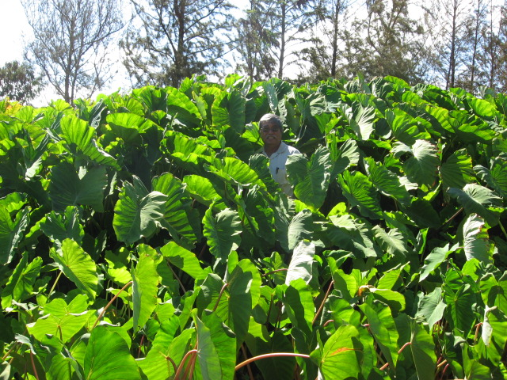

Moloka‘i Research Station, College of Tropical Agriculture and Human Resources (CTAHR)
Agricultural research station with a collection of Polynesian introduced food crops. Located near the Moloka‘i airport.
Moloka‘i Cooperative Extension Services (CES) Office
Mr. Alton Arakaki
P.O. Box 394
Ho‘olehua, HI 96729
(808)567-6929, Fax: (808)567-9633
email: .(JavaScript must be enabled to view this email address)

Alton Arakaki at the Moloka‘i Research Station